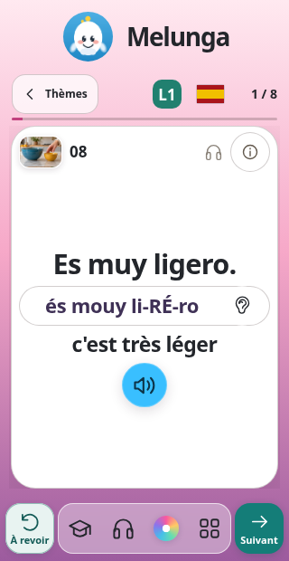
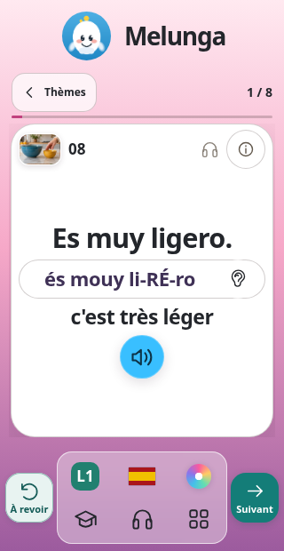
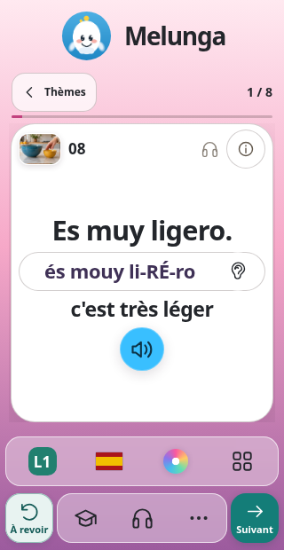
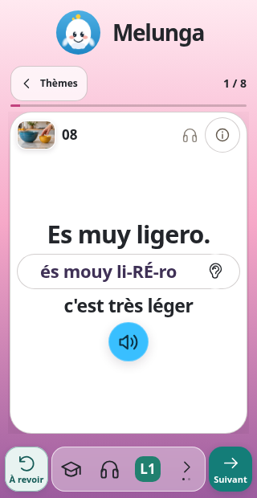

01
ConseilléeAccès directs
Révisions et Voix restent visibles. Niveau et langue passent près du retour aux thèmes : la barre garde sa finesse.

Melunga · Propositions mobile
Quatre façons d’ajouter ces deux raccourcis, avec À revoir à gauche, Suivant à droite et une capsule centrale translucide.
La toque ouvre Révisions ; le casque ouvre Voix. Le cours, le logo et la taille des textes restent les mêmes.
01
ConseilléeRévisions et Voix restent visibles. Niveau et langue passent près du retour aux thèmes : la barre garde sa finesse.

02
Les six réglages se répartissent sur deux rangées centrales. Tout est accessible immédiatement ; la barre prend plus de hauteur.

03
Révisions et Voix restent à portée de pouce. Un clic sur les trois points déplie les autres réglages, montrés ouverts ici.

04
Révisions, Voix et niveau forment le premier groupe. La flèche donne accès à langue, couleur et menu, sans déplacer les deux actions.
